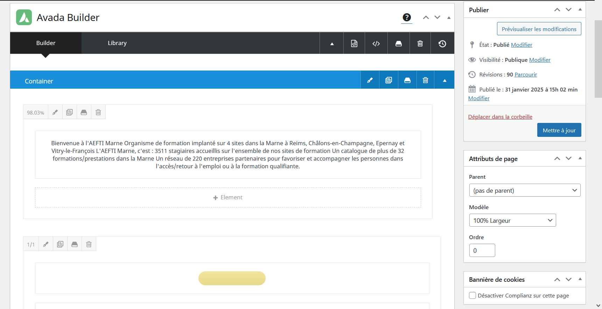
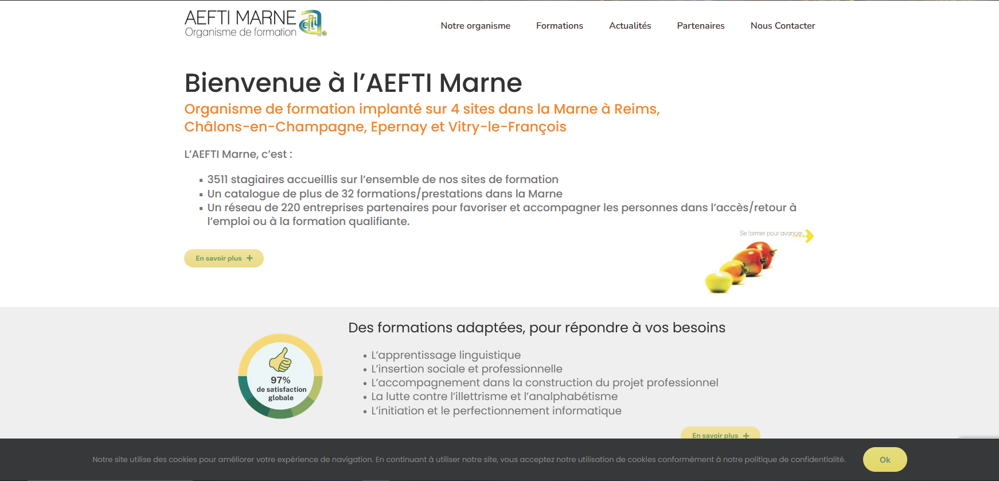

Étudiante BTS SIO — Option SLAM
C'est un stage de deuxième année pendant lequel j'étais confie de mettre à jour le site Web de l'organisme AEFTI Marne depuis 2017.
Une plateforme où se contient le site Web et où il est possible de rendre les modifications sur lui à l'aide des simples fonctionnalités :

